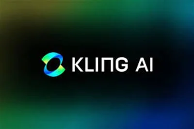
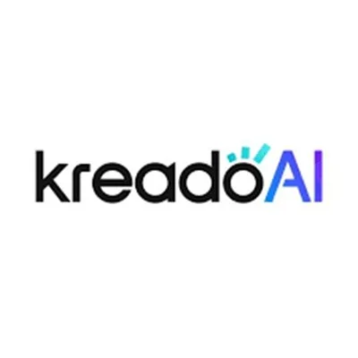
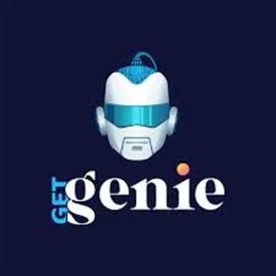
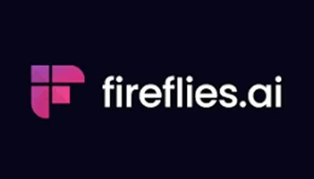

Najbolji AI Alati za Kreatore Sadržaja 2026 – 12 Testiranih
AI alati za kreatore sadržaja su softverski alati pokretani umjetnom inteligencijom koji pomažu kreatorima u produkciji, uređivanju, distribuciji i rastu sadržaja — brže i učinkovitije nego ikad. Prema istraživanju HubSpota iz 2025. godine, 64% kreatora sadržaja koristi najmanje jedan AI alat u svom radnom procesu. Moderni kreatorski alatompleta ima tri ključna stupa: video i vizualni sadržaj (generiranje, repurposing i uređivanje snimaka), pisanje i copywriting (skripte, opisi, blog objave i oglasi), te raspoređivanje i analitika (objava na svim platformama i praćenje performansi). Ovaj popis pokriva sve tri kategorije i daje vam potpun, testiran izbor alata. Bez obzira stvarate li kratkoformatne videe za TikTok i Reelove, dugi YouTube sadržaj, blog tekstove ili objave za društvene mreže — ovdje postoji alat koji odgovara vašem tijeku rada. Svaki alat na ovom popisu testiran je od strane WebAlati tima. Svi alati nude besplatnu verziju ili probno razdoblje.
Neki linkovi na ovoj stranici su affiliate linkovi. Možemo zaraditi proviziju bez dodatnih troškova za vas. Politika otkrivanja →

Syllaby
Besplatno/PlaćenoAI platforma napravljena za TikTok, Reels i YouTube Shorts. Analizira popularne teme, generira skripte za videe i kreira bezlične AI avatar videe — bez kamere ili vještina montaže.
Isprobaj Syllaby →
Opus Clip
FreemiumPretvara dugačke videe u kratke virusne isječke za nekoliko minuta. AI identificira najzanimljivije momente i automatski ih formatira s titlovima za TikTok, Instagram i YouTube Shorts.
Isprobaj Opus Clip →
ElevenLabs
FreemiumIndustrijski vodeći AI klon glasa i pretvaranje teksta u govor. Klonirajte vlastiti glas, generirajte naracije na 29 jezika i proizvedite audio studijske kvalitete za videe, podcastove i oglase.
Isprobaj ElevenLabs →
Kling AI
FreemiumNapredno generiranje videa iz teksta s fizički svjesnim modeliranjem pokreta. Generira kinematske, visokokvalitetne video scene iz jednostavnih tekstualnih uputa.
Isprobaj Kling AI →
Clone Viral
FreemiumAnalizira virusne video kukice, formate i obrasce pripovijedanja s TikToka i Instagrama. Pokazuje točno koju strukturu koristiti za virusni sadržaj koji možete replicirati.
Isprobaj Clone Viral →
KreadoAI
FreemiumKreira AI avatar videe na više od 100 jezika direktno iz teksta. Idealno za demonstracije proizvoda i lokalizirani marketing bez troškova snimanja ili prijevoda.
Isprobaj KreadoAI →
Get Genie
FreemiumAI asistent za pisanje kopije za blog objave, oglase, opise za društvene mreže i opise proizvoda. Generira SEO optimizirani sadržaj za nekoliko minuta s ugrađenom kontrolom tona.
Isprobaj Get Genie →
Ocoya
FreemiumSve-u-jednom AI alat za društvene mreže: generira opise, raspoređuje objave na 30+ platformi, daje prijedloge hashtagova i prati performanse — sve u jednoj nadzornoj ploči.
Isprobaj Ocoya →
Fireflies AI
FreemiumAutomatski snima, transkribira i sažima sastanke. Kreatori ga koriste za bilješke s intervjua, brief od brendova i pozive s klijentima s AI generiranim akcijskim točkama.
Isprobaj Fireflies AI →
Galaxy AI
FreemiumVisokokvalitetno AI generiranje slika za sličice, grafike za društvene mreže i vizuale brenda. Brza generacija, višestruki stilovi, komercijalna prava uključena.
Isprobaj Galaxy AI →
Tweet Hunter
PlaćenoAI alat za rast na Twitter/X. Generira ideje za virusne tweetove, raspoređuje threadove i automatizira angažman za brži rast publike.
Isprobaj Tweet Hunter →
Thumbnailtest
FreemiumTestira vaše YouTube sličice sa stvarnim gledateljima PRIJE objave. Pokazuje koja verzija dobiva više klikova za bolji CTR i više pregleda.
Isprobaj Thumbnailtest →Brza Usporedba: AI Alati za Kreatore Sadržaja
| Alat | Najkorisnije Za | Cijena | Besplatna Verzija |
|---|---|---|---|
| Syllaby | Kreiranje kratkih videa | Besplatno/Plaćeno | Da |
| Opus Clip | Repurposing videa | Freemium | Da |
| ElevenLabs | AI glas i naracija | Freemium | Da |
| Kling AI | Tekst-u-video | Freemium | Da |
| Clone Viral | Analiza virusnog sadržaja | Freemium | Da |
| KreadoAI | Višejezični AI avatari | Freemium | Da |
| Get Genie | AI copywriting | Freemium | Da |
| Ocoya | Raspoređivanje na društvenim mrežama | Freemium | Da |
| Tweet Hunter | Rast na Twitter/X | Plaćeno | 7-dnevno probno |
| Thumbnailtest | Optimizacija sličica | Freemium | Da |
Često Postavljana Pitanja – AI Alati za Kreatore Sadržaja
Koji su besplatni AI alati za kreatore sadržaja?
ElevenLabs, Syllaby i Galaxy AI nude darežljive besplatne planove. ElevenLabs daje 10.000 znakova mjesečno besplatno, Syllaby omogućava kreiranje osnovnih skripti i videa, a Galaxy AI uključuje kredite za generiranje slika. Za repurposing videa, Opus Clip nudi besplatni plan s ograničenim mjesečnim izvozima.
Koji AI alat je najbolji za pravljenje videa bez kamere?
Syllaby i KreadoAI su top izbori za kreiranje videa bez kamere. Syllaby generira skripte i kreira AI avatar videe optimizirane za TikTok i Shorts. KreadoAI se specijalizira za višejezični AI avatar sadržaj — korisno za kreatore koji ciljaju publike u različitim zemljama.
Mogu li AI alati pomoći u povećanju pratitelja na društvenim mrežama?
Da — alati poput Clone Viral analiziraju što sadržaj čini virusnim i zašto, Ocoya generira opise i raspoređuje objave, a Tweet Hunter pomaže rastu publike na Twitter/X s AI strategijama sadržaja. Korišteni zajedno, pokrivaju cijeli kreatorski tijek rada.
Koji AI alati se koriste za glasovnu naraciju videa?
ElevenLabs je industrijski standard za AI glasovnu naraciju. Podržava kloniranje glasa, 29 jezika i producira audio studijske kvalitete. KreadoAI također uključuje ugrađenu AI naraciju za avatar videe.
Koliko koštaju AI alati za kreatore sadržaja?
Većina alata na ovom popisu je besplatno/plaćeno — možete početi besplatno s ograničenom upotrebom. Plaćeni planovi tipično koštaju 10–50 USD/mj. Ulaganje u 2–3 ključna alata obično iznosi 30–80 USD/mj za kompletan kreatorski tijek rada.
Koji je najvažniji AI alat za početnika kreatora?
Počnite sa Syllaby ako pravite kratkoformatni video sadržaj — pokriva skriptu, video i distribuciju u jednom alatu. Ako primarno pišete, Get Genie pokriva copywriting, opise za društvene mreže i blog objave. Za glasovni sadržaj, besplatna verzija ElevenLabs je dovoljna za početak.
Neki linkovi na ovoj stranici su affiliate linkovi. Možemo zaraditi proviziju bez dodatnih troškova za vas. Politika otkrivanja →